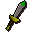

Poisoned dagger(p)

| Config name | poisoned_dagger_p |
| Item id | 1235 |
| Value | 565 gp |
| Weight | 1lb |
| Members | Yes |
| Tradeable | Yes |
| Stackable | No |
| Equip slot | righthand |
| Options | Wield |
| Category | weapon_stab |
| Defined in | scripts/skill_combat/configs/melee/daggers.obj |
| Equipment stats | Stab att 255, Slash att 255, Crush att 255, Magic att 255, Range att 255, Stab def 255, Slash def 255, Crush def 255, Magic def 255, Range def 255, Strength 255, Ranged str 255, Prayer 255 |
Poisoned dagger(p)
The blade is covered with poison.
Referenced in scripts
scripts/player/scripts/appearance.rs2